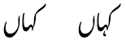

Used to indicate a number, eg. ۱۲۳.
The stroke may be elongated and pass under the number, but this is not a combining character, and should appear before the number in memory. The length of the symbol may vary according to the number of digits. It is terminated by a non-digit characteru,380.
`, '\u{0601}': `Dates are indicated by placing this long sweep below the year digits. For the Gregorian calendar this is followed with the word عیسوی which is usually abbreviated as a hamza ء.
Dates using the Muslim calendar are followed by the word ہجری ḫʤry hɪʤriː which is abbreviated with the symbol ھ.
The sanh sign is typed before the digits (in a rtl context): eg. ۲۰۰۴ء (2004). It is not a combining character, even though it displays beneath the digits. The length of the symbol may vary according to the number of digits. It is terminated by a non-digit character.
The sanh is derived from the Arabic word for year سنة.
`, '\u{0602}': `Used to indicate that a number is a footnote, eg. ؎۵.
The number sits above the symbol, although this is not a combining character. The marker should come before the number in logical orderu,380.
Do not confuse this with ؎ [U+060E ARABIC POETIC VERSE SIGN].
`, '\u{0603}': `Used to indicate a page number, where English would use an abbreviation such as "pp. 35-45", eg. ۴۵. The stroke may be elongated and pass under the numberu,380.
The symbol should come before the number in logical order.
The symbol is derived from the stroke used for ص [U+0635 ARABIC LETTER SAD].
`, '\u{0604}': `Used in Urdu to indicate a year in the Śaka calendaru,380. (Cf. the sign sanh which is used for dates in the Gregorian or Islamic calendar.)
The symbol should come before the number in logical order.
The symbol is a stylized abbreviation of the word samvat, the name of this calendar.
`, '\u{0605}': ` `, '\u{0606}': `؆
`, '\u{0607}': `؇
`, '\u{0608}': `؈
`, '\u{0609}': `؉
`, '\u{060A}': `؊
`, '\u{060B}': `؋
`, '\u{060C}': `،
`, '\u{060D}': `Used in Pakistan and India between the numeric date and the month name when writing out a dateu,379, eg. 27؍اگست2021ء
`, '\u{060E}': `؎
Often used to mark the beginning of poetic verse.u,381 For an example see Figure 8 in Jonathan Kew's examples.
Do not confuse this with [U+0602 ARABIC FOOTNOTE MARKER].
`, '\u{060F}': `؏
Urdu poetry typically creates poems from couplets. This symbol is used to indicate a single line (misra) of a couplet (shayr) from an Urdu poem, when quoted in text.shp,3
This sign is used when quoting a line of verse in text. It is used at the beginning of the line, and is followed by the line of verse. See an example.
`, '\u{0610}': `ؐ
Represents sallallahu alayhe wasallam sallallao alae va sallam (may God's peace and blessings be upon him) صلّى الله عليه وسلّم. Used over the name of Mohammed.
One of several marks that represent phrases expressing the status of a person, most having specifically religious meaning.
The mark is really associated with a word, rather than a character, but the placement is left to the user. The mark is often added somewhere in the middle of a name, but commonly appears towards the end. This depends to some extent on the letter shapes present and the calligraphic style in use, eg. محمّدؐ muhamːed sallallao alae va sallam.
`, '\u{0611}': `ؑ
Represents alayhe asallam alejsallam (upon him be peace) عليه السّلام. Used over the name of prophets other than Mohammed.
One of several marks that represent phrases expressing the status of a person, most having specifically religious meaning.
The mark is really associated with a word, rather than a character, but the placement is left to the user. The mark is often added somewhere in the middle of a name, but commonly appears towards the end. This depends to some extent on the letter shapes present and the calligraphic style in use, eg. عیسؑیٰ.
`, '\u{0612}': `ؒ
Represents rahmatulla alayhe raːmatʊlla alee (may God have mercy upon him) رحمت الله عليه. Used over the names of saints, religious authorities, and other deceased pious persons.
One of several marks that represent phrases expressing the status of a person, most having specifically religious meaning.
The mark is really associated with a word, rather than a character, but the placement is left to the user. The mark is often added somewhere in the middle of a name, but commonly appears towards the end. This depends to some extent on the letter shapes present and the calligraphic style in use, eg. قاضی نور محمّدؒ kaziː nur mamed rahmatulla alayhe Qazi Nur Muhammad, may God have mercy upon him!.
`, '\u{0613}': `ؓ
Represents radi allahu 'anhu raziallaːo ano (may God be pleased with him) رضي الله عنه. Used over the names of the Companions of the Prophet.
One of several marks that represent phrases expressing the status of a person, most having specifically religious meaning.
The mark is really associated with a word, rather than a character, but the placement is left to the user. The mark is often added somewhere in the middle of a name, but commonly appears towards the end. This depends to some extent on the letter shapes present and the calligraphic style in use, eg. ابوبکرؓ abu bakr, raziallaːo ano Abu Bakr, may God be pleased with him!.
`, '\u{0614}': `ؔ
Sign placed over the name or nom-de-plume of a poet, or in some writings used to mark all proper names.
The mark is really associated with a word, rather than a character, but the placement is left to the user. The mark is often added somewhere in the middle of a name, but commonly appears towards the end. This depends to some extent on the letter shapes present and the calligraphic style in use, eg. عطاشادؔ ataː ʃaːd Ata Shad (author's name).
`, '\u{0615}': `ؕ
`, '\u{0616}': `ؖ
`, '\u{0617}': `ؗ
`, '\u{0618}': `ؘ
`, '\u{0619}': `ؙ
`, '\u{061A}': `ؚ
`, '\u{061B}': `؛
`, '\u{061C}': `
`, '\u{061E}': `؞
`, '\u{061F}': `؟
`, '\u{0620}': `ؠ
`, '\u{0621}': `ء
This is the code point used for the standalone hamza only.
The hamza is also used in conjunction with other characters in Urdu, for which there is a combining character, and sometimes precomposed characters. See ٔ [U+0654 ARABIC HAMZA ABOVE].
A standalone hamza is sometimes used at the end of words derived from Arabic, though it is usually omitted in modern Urdu publications, eg. ضیاء ذکاء
٫ [U+066B ARABIC DECIMAL SEPARATOR] sometimes looks like a hamza, but this character shouldn't be used for that.
Calendar indicator
Gregorian dates are indicated by placing [U+0601 ARABIC SIGN SANAH] below the year digits with the word عیسوی
This is usually abbreviated as a hamza, eg. ۲۰۰۴ء
`, '\u{0622}': `آ
ɑː normally only used word-initially, eg.
آب
Unlike the short vowel diacritics, the diacritic madd is never omitted.
In a few exceptions, it used in non-initial position in a word, eg. القرآن سعآدت
The word madd means increasing.
See also ا [U+0627 ARABIC LETTER ALEF].
`, '\u{0623}': `أ
`, '\u{0624}': `ؤ
uː or o immediately after a preceding vowel (see below).
The canonical decomposition of this character is ؤ [U+0648 ARABIC LETTER WAW + U+0654 ARABIC HAMZA ABOVE].
Vowel junctions
One of the uses of the hamzā is to indicate the in-word boundaries between vowel sounds when there is no intervening consonant. When the second vowel is an uː or o represented by و, the hamzā typically sits directly on top of the و, eg. آؤ جاؤں
Often the hamzā is omitted in this situation.
Many words have the vowel combinations iːo, where hamzā is not typically used, eg. لڑکیوں کا
See other ways in which vowel junctions are formed.
`, '\u{0625}': `إ
`, '\u{0626}': `ئ
Although this character looks like something that is used in Urdu, it is recommended to instead use یٔ [U+06CC ARABIC LETTER FARSI YEH + U+0654 ARABIC HAMZA ABOVE].
This is because this character decomposes to ئ [U+064A ARABIC LETTER YEH + U+0654 ARABIC HAMZA ABOVE], but U+0626 is not used in Urdu.
That said, it is not hard to find content that contains this character, and in fact it may appear on some keyboards, too.
For more information, see Encoding choices.
`, '\u{0627}': `ا
a/ɪ/u on its own in word initial position, unless part of the Arabic definite article (see below). In vowelled text, the diacritics indicate which sound is intended, eg. انسان اڑنا ارب
∅ before all other word-initial vowels, as a vowel-carrier. In vowelled text, diacritics may be attached to this character, eg. اوپر ایمان
ɑː elsewhere, eg. سایہ بڑا
Exact vowel sounds can be disambiguated, when necessary, by the use of combining marks. The combining marks are rarely used in normal text. See a table of combining marks for vowels.
Combinations
ɑː in word-initial position is آ [U+0627 ARABIC LETTER ALEF + U+0653 ARABIC MADDAH ABOVE] in decomposed text, however this is usually represented by آ [U+0622 ARABIC LETTER ALEF WITH MADDA ABOVE], eg. آج
Arabic definite article The pronunciation of ال (alif followed by lām) varies when it represents the Arabic definite article. This affects many words in Urdu that have come from Arabic, in particular names and adverbial expressions.
Often the alif is not pronounced after a short preceding word that ends in a vowel. If the preceding vowel was long, it is shortened in this process. Examples: بالکل فی الحال
Often the vowel is pronounced ʊ, eg. دارالحکومت
(The lam may also not be pronounced. See ل [U+0644 ARABIC LETTER LAM].)
`, '\u{0628}': `ب
b eg. بہت سبزی عنب
تھتھتھ تھ
بھ
Combinations
bʱ is بھ [U+0628 ARABIC LETTER BEH + U+06BE ARABIC LETTER HEH DOACHASHMEE], a distinct letter of the Urdu alphabet called bhe, eg. بھاری
`, '\u{0629}': `ة
`, '\u{062A}': `ت
t eg. تین کتاب گنت
تھتھتھ تھ
تھ
Combinations
tʰ is تھ [U+062A ARABIC LETTER TEH + U+06BE ARABIC LETTER HEH DOACHASHMEE], a distinct letter of the Urdu alphabet called the, eg. تھوکنا
`, '\u{062B}': `ث
s in words of Arabic and Persian origin, eg. ثابت مثلاً
Much less common than س [U+0633 ARABIC LETTER SEEN] or ص [U+0635 ARABIC LETTER SAD], which are also pronounced s.
`, '\u{062C}': `ج
d͡ʒ eg. جیون مسجد پیج سورج
Shape: Before certain letters the initial form has a looped shape, eg. جانور
جھجھجھ جھ
جھ
Combinations
d͡ʒʱ is جھ [U+062C ARABIC LETTER JEEM + U+06BE ARABIC LETTER HEH DOACHASHMEE], a distinct letter of the Urdu alphabet called d͡ʒʱe, eg. جھیل
`, '\u{062D}': `ح
h in words of Arabic and Persian origin, eg. حیاتیات محنت واضِح
Shape:
Before certain letters the initial form has a looped shape, eg. حَاکِم واحد
`, '\u{062E}': `خ
x eg. خون شخص بطخ
Shape: Before certain letters the initial form has a looped shape, eg. ناخدا خانہ
`, '\u{062F}': `د
d eg. دو ہندُو والد
دھ ـدھ
دھ
Combinations
dʱ is دھ [U+062F ARABIC LETTER DAL + U+06BE ARABIC LETTER HEH DOACHASHMEE], a distinct letter of the Urdu alphabet called dhe, eg. دھول
Shape. Easily confused with ر [U+0631 ARABIC LETTER REH] and و [U+0648 ARABIC LETTER WAW], eg. اردو
`, '\u{0630}': `ذ
z in words of Arabic and Persian origin, eg. ذکاء جذبہ
Much less common than ز [U+0632 ARABIC LETTER ZAIN], which is also pronounced z. It is not counted as a regular letter of the Urdu alphabet.
`, '\u{0631}': `ر
r or ɾ (as an allophone that tends to occur intervocalically), eg. رکت آرام گرجنا گجرات
Shape. Easily confused with د [U+062F ARABIC LETTER DAL] and و [U+0648 ARABIC LETTER WAW], eg. اردو
`, '\u{0632}': `ز
z eg. زندگی تمیز
`, '\u{0633}': `س
s eg. سورج کیسا ققنس
Two other letters are used for this sound due to the retention of Arabic or Persian spelling in loanwords: ص [U+0635 ARABIC LETTER SAD] and ث [U+062B ARABIC LETTER THEH].
Shape.In Urdu nastaliq text this can have two somewhat different shapes. The main part of the shape may be a wavy line, a little like a 'w', or can sometimes be a single swash – especially when two seen characters are written together, eg. سسس sss
Use the same character for both visual forms. When one or other of the possible shapes is desired, this should be produced by the font.
`, '\u{0634}': `ش
ʃ eg. شیشہ نشور دانش
Shape.In Urdu nastiliq text this can have two somewhat different shapes. The main part of the shape may be a wavy line, a little like a 'w', or can sometimes be a single swash – especially when two sheen characters are written together, eg. ششش sss
Use the same character for both visual forms. When one or other of the possible shapes is desired, this should be produced by the font.
`, '\u{0635}': `ص
s in words of Arabic origin, eg. صفحہ تفصیل شخص
`, '\u{0636}': `ض
z in words of Arabic origin, eg. ضِد قبضہ نبض
`, '\u{0637}': `ط
t Only used in words of Arabic origin, eg. طور خطوط
`, '\u{0638}': `ظ
z in words of Arabic origin, eg. ظَاہِر نظیف لَفْظ
`, '\u{0639}': `ع
Not normally pronounced when preserved in Arabic words.
ʔ occasionally between two vowels, although this is often lost in Urdu, eg. معاف سعآدت
Vowel modification
If it occurs at the beginning of a word, it can fulfill a similar role to alif, allowing words to begin with a vowel, but also allowing for alternative spellings for different words with the same pronunciation, eg. compare ارب عرب
A word-initial ɑː sound when the spelling begins with alif is written as آ [U+0622 ARABIC LETTER ALEF WITH MADDA ABOVE]. The same word-initial sound with 'ain is represented by عا [U+0639 ARABIC LETTER AIN + U+0627 ARABIC LETTER ALEF], eg. آج عادت
In non-word-initial positions an ain can cause a change in sound to preceding short vowels. This results in long vowels, but not always the long form typically associated with a given short form.
غ
ɣ in words that came into Urdu from Arabic and Persian, eg. غُلام لغت چراغ
`, '\u{063B}': `ػ
`, '\u{063C}': `ؼ
`, '\u{063D}': `ؽ
`, '\u{063E}': `ؾ
`, '\u{063F}': `ؿ
`, '\u{0640}': `ـ
`, '\u{0641}': `ف
f eg. فیصد سفید نظیف
`, '\u{0642}': `ق
q in words that came into Urdu from Arabic and Persian, eg. قلم مقدار نستعلیق
`, '\u{0643}': `ك
`, '\u{0644}': `ل
l eg. لینا قلعہ کمل لال
∅ when part of the Arabic definite article (see below).
Shape. Combined with a following alif, lām is usually written as لا, eg. گلاس. Sometimes, however, especially in words of Arabic origin such as the equivalent of the English prefix 'un-', the more Arabic form لا is used, eg. لاعلاج lɑʿlɑʤ lɑːʕilɑːʒ (incurable).
Note that I don't know a way to make this example work with a single font. To produce it I had to mix two different fonts. There may be a special font setting that allows you to control this.
Arabic definite article The pronunciation of ال (alif followed by lām) varies when it represents the Arabic definite article. This affects many words in Urdu that have come from Arabic, in particular names and adverbial expressions.
The lām is not pronounced if it precedes one of the following characters: ت062A te, ث062B se, د062F dāl, ذ0630 zāl, ر0631 re, ز0632 ze, س0633 sīn, ش0634 šīn, ص0635 svād, ض0636 zvād, ط0637 toe, ظ0638 zoe, ل0644 lām, ن0646 nūn. Instead, the following sound is doubled. A tašdīd (ـّ [U+0651 ARABIC SHADDA] ) may sometimes be used to indicate this. Example: السلام علیکم.
There may also be effects on the sound of the alif too. See ا [U+0627 ARABIC LETTER ALEF].
`, '\u{0645}': `م
m eg. مچھلی ہمیشگی موسم معاملہ
`, '\u{0646}': `ن
n, eg. نہیں ہندوٗ کمپن انسان
Nasalisation
◌̃ Within a word it may signal that the preceding vowel is nasalised, rather than representing an n sound, eg. ٹانگ معاملہ
Sometimes ـ٘ [U+0658 ARABIC MARK NOON GHUNNA] is used above this letter in such cases, to clarify that its function is nasalisation, eg. ہَان٘ک
Nasalisation at the end of a word is signalled using ں [U+06BA ARABIC LETTER NOON GHUNNA], eg. ماں کروں.
`, '\u{0647}': `ه
`, '\u{0648}': `و
ʋ as consonant, eg. والد توچا
v in some cases, eg. ورت نومبر
w as an allophone, commonly occuring between a consonant and vowel, eg. پکوان آٹھواں
∅ in a number of words of Persian origin beginning with خوا, eg. خواب خواہش
Vowels.
uː or oː or ɔː as a vowel, whether word initial after alif, او, or elsewhere on its own, eg. اوپر لوگ شوق
The alternative vowel sounds can be disambiguated, when necessary, by the use of combining marks. The combining marks are rarely used in normal text. See a table of combining marks for vowels.
ʊ in two very common words: خود خوش
Shape.
Easily confused with د [U+062F ARABIC LETTER DAL] and ر [U+0631 ARABIC LETTER REH], eg. اردو
`, '\u{0649}': `ى
`, '\u{064A}': `ي
`, '\u{064B}': `ً
This is a doubled zabar (064E ). These marks appear at the ends of certain Arabic adverbs. The doubled zabar is the most common of the three marks of this type. Although the mark appears over an alif the vowel sound is short. Examples, یقیناً مثلاً
`, '\u{064C}': `ٌ
Doubled peš (064F ), used for spelling certain Arabic words. Used only in vowelled texts, and then not common.
`, '\u{064D}': `ٍ
Doubled zer (0650 ), used for spelling certain Arabic words. Used only in vowelled texts, and then not common.
`, '\u{064E}': `َ
Rarely used; only where pronunciation needs to be spelled out. Indicates a vowel following its base character. zabar means above.
ə above a consonant, eg. بَب bab bəb
Combinations
At the begining of a word it appears above alif or 'ain, eg. اَب عَرَب
When the base consonant is followed by certain other letters, zabar represents different sounds, as shown below:
ɑː in the sequences
◌َا [U+064E ARABIC FATHA + U+0627 ARABIC LETTER ALEF],
◌َع [U+064E ARABIC FATHA + U+0639 ARABIC LETTER AIN], and
◌َہ [U+064E ARABIC FATHA + (silent, final) U+06C1 ARABIC LETTER HEH GOAL], eg.
بَاغ
مکَہ
بَعد
ɛː in the sequences
◌َی [U+064E ARABIC FATHA + U+06CC ARABIC LETTER FARSI YEH], or
◌َے [U+064E ARABIC FATHA + U+06D2 ARABIC LETTER YEH BARREE], eg.
اَیسا
جَیسا
ہَے
ɛ in the sequences
◌َہ [U+064E ARABIC FATHA + U+06C1 ARABIC LETTER HEH GOAL], or
◌َح [U+064E ARABIC FATHA + U+062D ARABIC LETTER HAH], eg.
اَحمد
رَہنا
ɔː in the sequence
◌َو [U+064E ARABIC FATHA + U+0648 ARABIC LETTER WAW], eg.
شَوق
اَور
See a table of combining marks for vowels.
`, '\u{064F}': `ُ
Rarely used; only where pronunciation needs to be spelled out. Indicates a vowel following its base character. peš means forward.
ʊ above a consonant, eg. بُب bub bʊb
Combinations
At the begining of a word it appears above alif or 'ain, eg. اُبْٹَنْ
When peš is followed by certain other letters, the combination represents different sounds, as shown below:
uː in the sequence
◌ُو [U+064F ARABIC DAMMA + U+0648 ARABIC LETTER WAW], eg.
اُوپَر پُورَا
o in the sequence
◌ُع [U+064F ARABIC DAMMA + U+0639 ARABIC LETTER AIN], eg.
شُعلہ
تَوَقُّع
ɔin the sequences
◌ُہ [U+064F ARABIC DAMMA + U+06C1 ARABIC LETTER HEH GOAL], or
◌ُح [U+064F ARABIC DAMMA + U+062D ARABIC LETTER HAH], eg.
شُہرت
توجُّہ
ʊ, rather than a long vowel, in two very common words with a following vɑːuː: خُود خُوش
The following commonly used word is irregular وہ
See a table of combining marks for vowels.
`, '\u{0650}': `ِ
Rarely used; only where pronunciation needs to be spelled out. Indicates a vowel following its base character. zer means below.
ɪ below a base consonant, eg.
بِب بِب bib bɪb
Combinations
At the begining of a word it appears below alif or 'ain, eg. اِتْنَا عِلْم
When the base consonant is followed by certain other letters, zer represents different sounds, as shown below:
iː in the sequence
◌ِی [U+0650 ARABIC KASRA + U+06CC ARABIC LETTER FARSI YEH], eg.
سِینہ
اِیمان
e in the sequence
◌ِع [U+0650 ARABIC KASRA + U+0639 ARABIC LETTER AIN], eg.
شِعر
واقِع
ɛ in the sequences
◌ِہ [U+0650 ARABIC KASRA + U+06C1 ARABIC LETTER HEH GOAL], and
◌ِح [U+0650 ARABIC KASRA + U+062D ARABIC LETTER HAH], eg.
مِہربانی
واضِح
See a table of combining marks for vowels.
Izafat
ɪzɑːfat is the name given to the short vowel ɛ when used to describe a relationship between two words. It may be translated of, eg. as in the Lion of Punjab.
This sound is mostly represented using zer. Sometimes, however, the combining mark is not shown, even though pronounced. Examples: شیرِ پنجاب طالبِ علم
There are other ways in which ɪzāfat can be formed.
`, '\u{0651}': `ّ
Doubles the sound of the base consonant it is attached to, eg. ستّر
Most native consonants may be lengthened, but not bʱ, ɽ, ɽʱ, or ɦ. Geminate consonants are always medial and preceded by one of ə, ɪ, or ʊ.whp,#Consonants
More often than not, this is not written.
tašdīd means strengthening.
`, '\u{0652}': `ْ
Rarely used; indicates absence of a vowel between consonants, eg. سَخْت
It has various possible forms, including an inverted-v, a small round circle, and something that looks like peʃ. (There is another Unicode character that provides a similar visual form, ـۡ [U+06E1 ARABIC SMALL HIGH DOTLESS HEAD OF KHAH], but it is better to use the sukun and select the variant required by choosing an appropriate font, or using font feature settings.)
This diacritic is never normally written above the final character in a word, because as a rule a short vowel is not pronounced in this position.
Sukūn is an Arabic word meaning rest or pause.
`, '\u{0653}': `ٓ
Only found in decomposed text, and associated only with alef. See آ.
`, '\u{0654}': `ٔ
ɛ when used as izafat.
∅ when used to separate vowel sounds with no intervening consonant.
See Hamza & precomposed characters for notes on the use of precomposed characters, especially ئ [U+0626 ARABIC LETTER YEH WITH HAMZA ABOVE].
Izāfat ɪzɑːfat is the name given to the short vowel ɛ used to describe a relationship between two words. It may be translated of, eg. as in the Lion of Punjab. This sound occurs word-finally, and is mostly represented using zer, but in certain cases is represented with a combining hamza. See details.
Vowel separation. The hamza is used word-internally to separate adjacent vowel sounds. See details.
`, '\u{0655}': `ٕ
`, '\u{0656}': `ٖ
Used to indicate that the vowel is iː or i rather than e, eg. نُحْیٖ nuḫ͓yᵢ nʊɦiː
This diacritic is not usually needed, and serves only to emphasise that the vowel is long.
`, '\u{0657}': `ٗ
Used in the combination وٗ to indicate that the vowel is uː rather than ɔː or oː, eg. اوٗپَر ہِنْدوٗ
This diacritic is not usually needed, and serves only to emphasise that the vowel is long.
`, '\u{0658}': `٘
Used to make it clear that a ن [U+0646 ARABIC LETTER NOON] character represents nasalisation rather than the sound n,u,383 eg. ٹان٘گ
It is not used in a standard way, just when the user prefers, and is fairly uncommon.
Not used over word-final ں [U+06BA ARABIC LETTER NOON GHUNNA].
`, '\u{0659}': `ٙ
`, '\u{065A}': `ٚ
`, '\u{065B}': `ٛ
`, '\u{065C}': `ٜ
`, '\u{065D}': `ٝ
`, '\u{065E}': `ٞ
`, '\u{065F}': `ٟ
`, '\u{0660}': `٠
`, '\u{0661}': `١
`, '\u{0662}': `٢
`, '\u{0663}': `٣
`, '\u{0664}': `٤
`, '\u{0665}': `٥
`, '\u{0666}': `٦
`, '\u{0667}': `٧
`, '\u{0668}': `٨
`, '\u{0669}': `٩
`, '\u{066A}': `٪
`, '\u{066B}': `٫
eg. ۲٬۵۲۴٫۲۳ 2̣٬5̣2̣4̣٫2̣3̣ 2,524.23 (pronounced do hazɑːr pɑ̃ːʧ sau caubiːs aʃɑːrɪjɑː do tiːn). In Urdu this may sometimes look like a hamza.
`, '\u{066C}': `٬
eg. ۲٬۵۲۴٫۲۳ 2̣٬5̣2̣4̣٫2̣3̣ 2,524.23 (pronounced do hazɑːr pɑ̃ːʧ sau caubiːs aʃɑːrɪjɑː do tiːn).
`, '\u{066D}': `٭
`, '\u{066E}': `ٮ
`, '\u{066F}': `ٯ
`, '\u{0670}': `ٰ
Used in a few Arabic words over the final form of 06CC to produce the sound ɑː, eg. اعلیٰ دعویٰ
`, '\u{0671}': `ٱ
`, '\u{0672}': `ٲ
`, '\u{0673}': `ٳ
`, '\u{0674}': `ٴ
`, '\u{0675}': `ٵ
`, '\u{0676}': `ٶ
`, '\u{0677}': `ٷ
`, '\u{0678}': `ٸ
`, '\u{0679}': `ٹ
ʈ eg. ٹانگ مٹانا منٹ
Combinations
ʈʰ is ٹھ [U+0679 ARABIC LETTER TTEH + U+06BE ARABIC LETTER HEH DOACHASHMEE], a distinct letter of the Urdu alphabet called ʈhe, eg. ٹھنڈا
`, '\u{067A}': `ٺ
`, '\u{067B}': `ٻ
`, '\u{067C}': `ټ
`, '\u{067D}': `ٽ
`, '\u{067E}': `پ
p eg. پانی کپاس سانپ
تھتھتھ تھ
پھ
Combinations
pʰ is پھ [U+067E ARABIC LETTER PEH + U+06BE ARABIC LETTER HEH DOACHASHMEE], a distinct letter of the Urdu alphabet called phe, eg. پھل
`, '\u{067F}': `ٿ
`, '\u{0680}': `ڀ
`, '\u{0681}': `ځ
`, '\u{0682}': `ڂ
`, '\u{0683}': `ڃ
`, '\u{0684}': `ڄ
`, '\u{0685}': `څ
`, '\u{0686}': `چ
t͡ʃ eg. چیز غنچہ بیچ
Shape: Before certain letters the initial form has a looped shape, eg. چار
چھچھچھ چھ
چھ
Combinations
t͡ʃʰ is چھ [U+0686 ARABIC LETTER TCHEH + U+06BE ARABIC LETTER HEH DOACHASHMEE], a distinct letter of the Urdu alphabet called t͡ʃʰe, eg. چھوٹا
`, '\u{0687}': `ڇ
`, '\u{0688}': `ڈ
ɖ eg. ڈوری ٹھنڈا گرڈ
ڈھ ـڈھ
ڈھ
Combinations
ɖʱ is ڈھ [U+0688 ARABIC LETTER DDAL + U+06BE ARABIC LETTER HEH DOACHASHMEE], a distinct letter of the Urdu alphabet called ɖʱe, eg. ڈھونڈھ
`, '\u{0689}': `ډ
`, '\u{068A}': `ڊ
`, '\u{068B}': `ڋ
`, '\u{068C}': `ڌ
`, '\u{068D}': `ڍ
`, '\u{068E}': `ڎ
`, '\u{068F}': `ڏ
`, '\u{0690}': `ڐ
`, '\u{0691}': `ڑ
ɽ eg. بڑا سڑک پہاڑ
ڑھ ـڑھ
ڑھ
Combinations
ɽʱ is ڑھ [U+0691 ARABIC LETTER RREH + U+06BE ARABIC LETTER HEH DOACHASHMEE], a distinct letter of the Urdu alphabet called ɽʱe, eg. گاڑھا
`, '\u{0692}': `ڒ
`, '\u{0693}': `ړ
`, '\u{0694}': `ڔ
`, '\u{0695}': `ڕ
`, '\u{0696}': `ږ
`, '\u{0697}': `ڗ
`, '\u{0698}': `ژ
ʒ eg. ژالہ اژدہا
`, '\u{0699}': `ڙ
`, '\u{069A}': `ښ
`, '\u{069B}': `ڛ
`, '\u{069C}': `ڜ
`, '\u{069D}': `ڝ
`, '\u{069E}': `ڞ
`, '\u{069F}': `ڟ
`, '\u{06A0}': `ڠ
`, '\u{06A1}': `ڡ
`, '\u{06A2}': `ڢ
`, '\u{06A3}': `ڣ
`, '\u{06A4}': `ڤ
`, '\u{06A5}': `ڥ
`, '\u{06A6}': `ڦ
`, '\u{06A7}': `ڧ
`, '\u{06A8}': `ڨ
`, '\u{06A9}': `ک
k eg. کتا نمکین ہانک
Shape
When followed by alif or lām, this has a special rounded shape, eg. کا کل
کھکھکھ کھ
کھ
Combinations
kʰ is کھ [U+06A9 ARABIC LETTER KEHEH + U+06BE ARABIC LETTER HEH DOACHASHMEE], a distinct letter of the Urdu alphabet called khe, eg. کھانا
`, '\u{06AA}': `ڪ
`, '\u{06AB}': `ګ
`, '\u{06AC}': `ڬ
`, '\u{06AD}': `ڭ
`, '\u{06AE}': `ڮ
`, '\u{06AF}': `گ
ɡ eg. گردن گگن ٹانگ
Shape
When followed by alif or lām, this has a special rounded shape, eg. گام گل
گھگھگھ گھ
گھ
Combinations
ɡʰ is گھ [U+06AF ARABIC LETTER GAF + U+06BE ARABIC LETTER HEH DOACHASHMEE], a distinct letter of the Urdu alphabet called ghe, eg. گھاس
`, '\u{06B0}': `ڰ
`, '\u{06B1}': `ڱ
`, '\u{06B2}': `ڲ
`, '\u{06B3}': `ڳ
`, '\u{06B4}': `ڴ
`, '\u{06B5}': `ڵ
`, '\u{06B6}': `ڶ
`, '\u{06B7}': `ڷ
`, '\u{06B8}': `ڸ
`, '\u{06B9}': `ڹ
`, '\u{06BA}': `ں
◌̃ Indicates that the preceding vowel is nasalised. It is normally only used at the end of a word, eg. ماں کروں
Nasalization within a word usually uses ن [U+0646 ARABIC LETTER NOON], eg. ٹانگ
Occasionally noon ghunna is found in the middle of a word where a final form is used, eg. compare the following spellings of likhēge he,they will write لکھیںگے lkʰyñgɛ لکھینگے lkʰyngɛ
It may also be used to represent the noon skeleton in representations of early Arabic and Quranic texts.
This is not counted as a regular letter of the Urdu alphabet.
Shape:ںںں ں
According to the Unicode Standard, all four forms of this character should be dotless, however when it appears initially or medially some fonts use a dotted form (eg. Scheherazade) or a dotted form with a noon ghunna diacritic above (eg. Noto Nastaliq Urdu).rpp
`, '\u{06BB}': `ڻ
`, '\u{06BC}': `ڼ
`, '\u{06BD}': `ڽ
`, '\u{06BE}': `ھ
Aspiration: Used to create the aspirated letters of the Urdu alphabet. Each letter is composed of two characters. The letters are: بھ bʰe, پھ pʰe, تھ tʰe, ٹھ ʈʰe, جھ ʤʰe, چھ ʧʰe, دھ dʰe, ڈھ ɖʰe, ڑھ ɽʰe, کھ kʰe, and گھ gʰe.
Until recently choṭī he (ہ [U+06C1 ARABIC LETTER HEH GOAL]) and do cašmī he could be used interchangeably to express aspiration, eg. compare the spellings for hãː yes: ہاں ḫɑñ ھاں ʰɑñ
Modern practice is to use this character exclusively for aspiration, though people do still occasionally confuse the two.
Calendar indicator: Dates using the Muslim calendar are followed by the word ہجری ḫʤry hɪʤriː
It is abbreviated with the symbol ھ.
`, '\u{06BF}': `ڿ
`, '\u{06C0}': `ۀ
`, '\u{06C1}': `ہ
h, eg. ہندو کہنا اوہ
Vowels
ɑː Many Arabic and Persian words end in a he that is pronounced just like alif, eg. مکہ کیمرہ
A word like rɑːʤɑː (king), can be spelled with either an alif or a he, ie. compare
راجا
راجہ
This is because the original Indian word was borrowed into Persian, then back into Urdu. Both spellings are now acceptable.
ɛ (occasional variant) in many cases when word-final.
In a few words, the pronunciation of silent he is irregular, eg. کہ نہ
Doubled he.
∅ when doubled at the end of a word. In order to distinguish some words where the final h is pronounced rather than representing ɑː (or ɛ in irregular pronunciations), the choṭī he is sometimes doubled, eg. compare کہہ کہ
Aspiration.
Until recently ہ [U+06C1 ARABIC LETTER HEH GOAL] and ھ [U+06BE ARABIC LETTER HEH DOACHASHMEE] could be used interchangeably, but modern practice is to use the latter exclusively for aspiration, though people do still occasionally confuse the two. For example, compare
ہاں
ھاں
Vowel changes.
choṭī he can change the preceding vowel as follows:
a to ɛ, eg. رَہنا
ɪ to ɛ, eg. مہربانی
ʊ to o, eg.
شہرت
Shape.
The initial form is written with a hook beneath, eg. ہندو
The medial can be written with or without, ie. the following shapes are equivalent:

A special initial form is used before alif or lam, eg. ہاں اہل
Note also the separation of the hook below yeh baree, eg. ہے
Izafat.
In decomposed text, this may be part of the izafat. See ۂ [U+06C2 ARABIC LETTER HEH GOAL WITH HAMZA ABOVE].
`, '\u{06C2}': `ۂ
ɛ when used as izafat.
The canonical decomposition of this character is ۂ [U+06C1 ARABIC LETTER HEH GOAL + U+0654 ARABIC HAMZA ABOVE].
Izāfat:Izāfat ɪzɑːfat is the name given to the short vowel ɛ used to describe a relationship between two words. It may be translated of, eg. as in the Lion of Punjab. This sound is mostly represented using zer, but in certain cases can be represented with a combining hamza.
When the preceding word ends in a silent choṭī he ہ [U+06C1 ARABIC LETTER HEH GOAL], izafat is represented by a combining hamza, eg. درجۂ حرارت
If the choṭī he is pronounced, then zer is used, eg. بَراہِ راسْت
There are other ways in which izafat can be formed.
`, '\u{06C3}': `ۃ
Rarely used except in certain loan words from Arabic. It is not pronounced. When replaced with an Urdu letter in naturalised loan words ہ [U+06C1 ARABIC LETTER HEH GOAL] is normally used.
`, '\u{06C4}': `ۄ
`, '\u{06C5}': `ۅ
`, '\u{06C6}': `ۆ
`, '\u{06C7}': `ۇ
`, '\u{06C8}': `ۈ
`, '\u{06C9}': `ۉ
`, '\u{06CA}': `ۊ
`, '\u{06CB}': `ۋ
`, '\u{06CC}': `ی
j as a consonant, usually word-initial or medial, eg. یار نہایت سایہ
Sometimes it may be difficult to tell, without vowelled text, whether this represents a consonant or a vowel. For example, the following could be read as kʰəd̪.joːt̪ or kʰə.d̪iː.wat̪.
کھدیوت
-j It may also appear as a syllable-final glide.
چای
Vowels
iː or eː or ɛː as a word-initial or word-medial vowel (initially it is used after alif, ای), eg. ایک سینہ کیسا
iː in word-final position, eg. لڑکی ہڈی
The alternative vowel sounds can be disambiguated, when necessary, by the use of combining marks. The combining marks are rarely used in normal text. See a table of combining marks for vowels.
Vowel clusters & izafat
Also used as a seat for the hamza in vowel clusters and izafat, eg. گائے روئے زمین
`, '\u{06CD}': `ۍ
`, '\u{06CE}': `ێ
`, '\u{06CF}': `ۏ
`, '\u{06D0}': `ې
`, '\u{06D1}': `ۑ
`, '\u{06D2}': `ے
eː or ɛː, eg. لڑکے
Although they are rarely used in normal text, the alternative sounds can be disambiguated, when necessary, by the use or non-use of diacritics, eg. compare ہَے سے
See a table of combining marks for vowels.
Vowel clusters: When this character represents the second vowel in a vowel cluster it is preceded by hamza 'on its chair', ie. یٔے [U+06CC ARABIC LETTER FARSI YEH + U+0654 ARABIC HAMZA ABOVE + U+06D2 ARABIC LETTER YEH BARREE], eg. گائے گئے
Izāfat: When the preceding word ends in ALEF or WAW, izafat is represented using hamza 'on its chair' and this character, eg. صدائے بلند روئے زمین
When it ends with this character, a combining hamza is added. This may be written with the precomposed character ۓ [U+06D3 ARABIC LETTER YEH BARREE WITH HAMZA ABOVE] or with this character plus ٔ [U+0654 ARABIC HAMZA ABOVE]. Both alternatives are canonically equivalent.
Sometimes, however, the hamza is not shown. See other ways in which izafat can be formed.
Shape:ے ے. This form is used only in word final or isolated position. This shape is regarded as a stylistic variant of the letter yeh in Arabic and Persian text, but it has a functional purpose in Urdu, to help with Urdu's larger number of vowels.
`, '\u{06D3}': `ۓ
Used to write izafat after a word that ends with ے [U+06D2 ARABIC LETTER YEH BARREE].
`, '\u{06D4}': `۔
`, '\u{06D5}': `ە
`, '\u{06D6}': `ۖ
`, '\u{06D7}': `ۗ
`, '\u{06D8}': `ۘ
`, '\u{06D9}': `ۙ
`, '\u{06DA}': `ۚ
`, '\u{06DB}': `ۛ
`, '\u{06DC}': `ۜ
`, '\u{06DD}': `
`, '\u{06DE}': `۞
`, '\u{06DF}': `۟
`, '\u{06E0}': `۠
`, '\u{06E1}': `ۡ
`, '\u{06E2}': `ۢ
`, '\u{06E3}': `ۣ
`, '\u{06E4}': `ۤ
`, '\u{06E5}': `ۥ
`, '\u{06E6}': `ۦ
`, '\u{06E7}': `ۧ
`, '\u{06E8}': `ۨ
`, '\u{06E9}': `۩
`, '\u{06EA}': `۪
`, '\u{06EB}': `۫
`, '\u{06EC}': `۬
`, '\u{06ED}': `ۭ
`, '\u{06EE}': `ۮ
`, '\u{06EF}': `ۯ
`, '\u{06F0}': `۰
Shape۰, ie. same as ٠ [U+0660 ARABIC-INDIC DIGIT ZERO].
`, '\u{06F1}': `۱
Shape۱, ie. same as ١ [U+0661 ARABIC-INDIC DIGIT ONE].
`, '\u{06F2}': `۲
Shape۲, ie. same as ٢ [U+0662 ARABIC-INDIC DIGIT TWO].
`, '\u{06F3}': `۳
Shape۳, ie. same as ٣ [U+0663 ARABIC-INDIC DIGIT THREE].
`, '\u{06F4}': `۴
Shape۴, cf. ٤ [U+0664 ARABIC-INDIC DIGIT FOUR].
`, '\u{06F5}': `۵
Shape۵, cf. ٥ [U+0665 ARABIC-INDIC DIGIT FIVE].
`, '\u{06F6}': `۶
Shape۶, cf. ٦ [U+0666 ARABIC-INDIC DIGIT SIX].
`, '\u{06F7}': `۷
Shape۷, cf. ٧ [U+0667 ARABIC-INDIC DIGIT SEVEN].
`, '\u{06F8}': `۸
Shape۸, ie. same as ٨ [U+0668 ARABIC-INDIC DIGIT EIGHT].
`, '\u{06F9}': `۹
Shape۹, ie. same as ٩ [U+0669 ARABIC-INDIC DIGIT NINE].
`, '\u{06FA}': `ۺ
`, '\u{06FB}': `ۻ
`, '\u{06FC}': `ۼ
`, '\u{06FD}': `۽
`, '\u{06FE}': `۾
`, '\u{06FF}': `ۿ
`, }